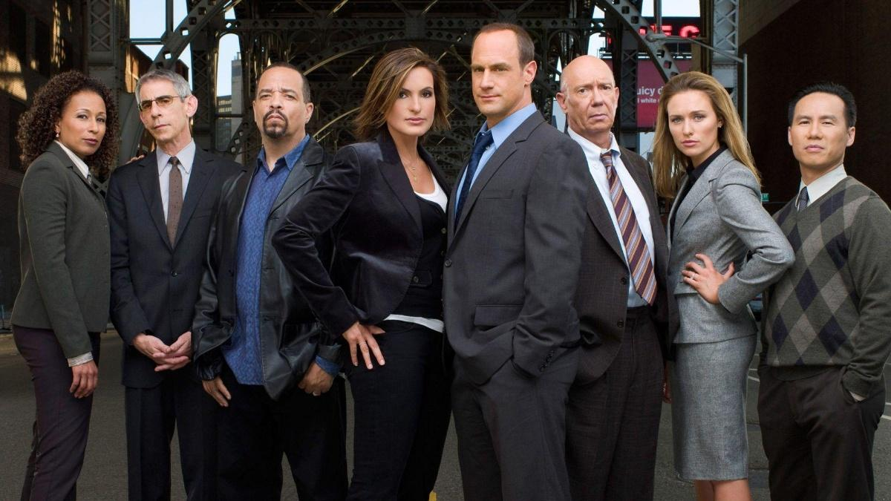
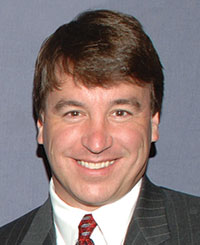

Sinopsis
La serie fue creada por el productor y guionista estadounidense Dick Wolf como un spin-off de La Ley y el Orden. La idea surgió de su interés por investigar y representar delitos sexuales y casos reales que aparecían en las noticias. Originalmente iba a llamarse Sex Crimes, pero finalmente recibió el nombre Law & Order: Special Victims Unit. Se estrenó el 20 de septiembre de 1999 por la cadena NBC y, debido a su éxito, continuó durante numerosas temporadas.
Directores y Encargados
-
.webp) Dick Wolf: creador y productor
ejecutivo.
Dick Wolf: creador y productor
ejecutivo. -

Peter Jankowski: productor ejecutivo. - Warren Leight: guionista, productor ejecutivo y showrunner.
- Julie Martin: guionista y productora ejecutiva.
Historia de su produccion
La producción de La ley y el orden: Unidad de Víctimas Especiales (UVE) comenzó en 1999, cuando el productor y creador Dick Wolf decidió desarrollar una serie derivada de La ley y el orden, centrada en los delitos sexuales y los casos de abuso. La serie fue creada para mostrar el trabajo de una unidad policial especializada y las investigaciones que realiza junto con la justicia. Originalmente, el proyecto iba a llamarse Sex Crimes, pero finalmente se eligió el nombre Special Victims Unit. La serie se filmó principalmente en Nueva York y se estrenó el 20 de septiembre de 1999 por la cadena NBC. Con el paso de los años incorporó nuevos actores, productores e historias inspiradas en casos reales, convirtiéndose en una de las series policiales más duraderas de la televisión.